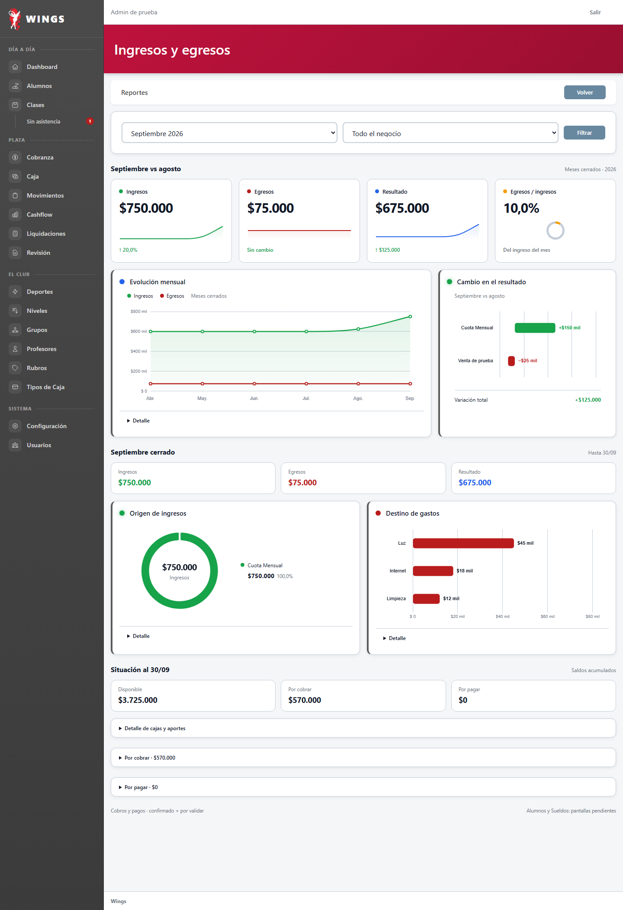
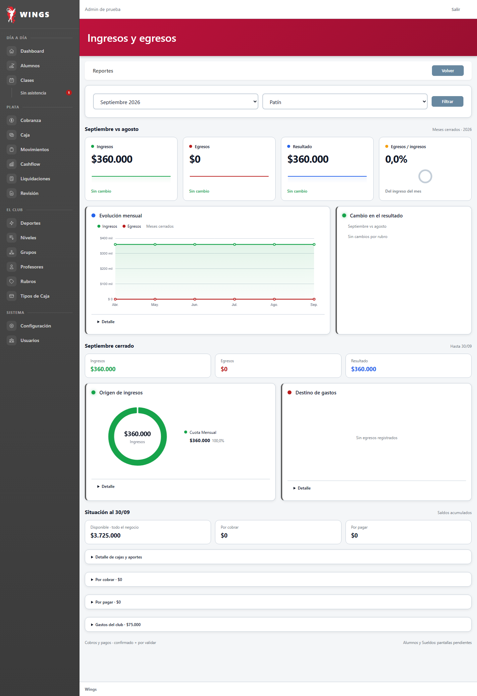
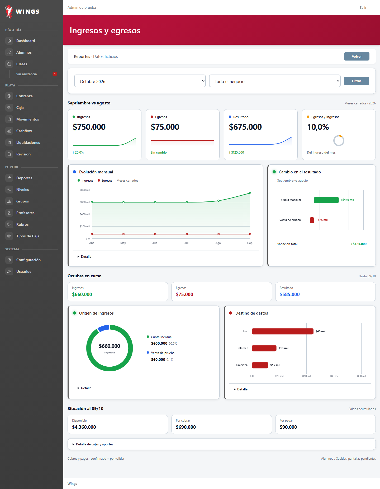
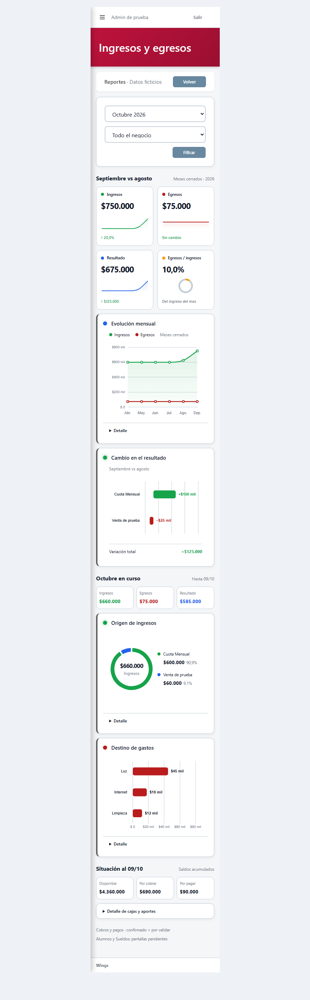

Ingresos y egresos · Más visual
V3 aprobada y aplicada · «Si, mucho mejor» · datos ficticios.
Tarjetas, gráficos y detalle plegado
Mes/deporte y detalle conectados. Alumnos y Sueldos pendientes.


Mes cerrado y filtro por deporte






Capturas V3 aprobadas por Carlos


Versión anterior V2
Antes del pedido de Carlos de más visual y menos lectura.


Inicio · Aprobado y aplicado
Carlos: «Ok, aprobado». Cuatro avisos conectados y verificados. Ver y cuatro cifras llevan a Reportes con el mismo mes y detalle.


Reportes original · Rechazado por Carlos
Antecedente conservado, sin aprobación ni aplicación: «Ese reporte no sirve».


Control del método: login a 375. La pantalla entra completa. Ensayo del motor e historial. Sin despliegue.